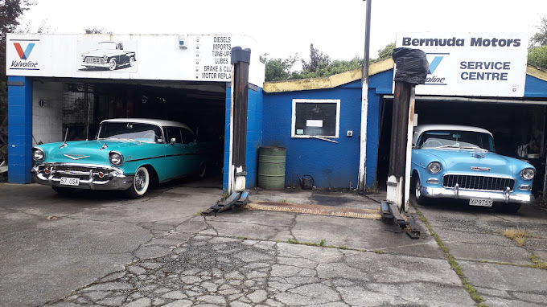

About Our Mechanics Workshop
Welcome to Bermuda Motors, your trusted local business with a reputable name and decades of experience in all aspects of automobile repairs. Our dedicated team of expert mechanics is committed to providing top-notch service and ensuring the satisfaction of our valued customers. Whether it's routine maintenance, major repairs, or diagnostics, you can trust us to handle it with precision and care. We take pride in our expertise and keep up with the latest industry advancements to offer reliable solutions for all your automotive needs. At Bermuda Motors, your vehicle is in safe hands!